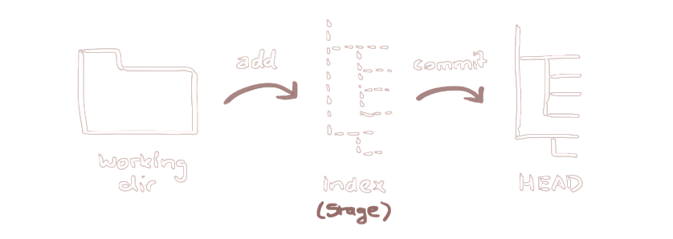
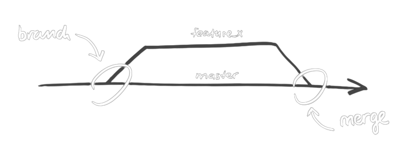

Innovate, Automate, Elevate
---
title: Git
author: AT
date: "2024-07-19"
---
Git is a distributed version control system that helps track changes in source code during software development.
> git stash> git rebase> git cherry-pick> winget install Git.git> sudo apt install git
Create a new directory, open it and perform a
> git initto create a new git repository
Create a working copy of local repository
> git clone https://github.com/andyted/sre-labfriday.gitYour local repository consists of three "trees" maintained by git. the first one is your Working Directory which holds the actual files. the second one is the Index which acts as a staging area and finally the HEAD which points to the last commit you've made.

You can propose changes (add it to the Index) using
git add <filename>
git add .
This is the first step in the basic git workflow. To actually commit these changes use
git commit -m "Commit message"
Now the file is committed to the HEAD, but not in your remote repository yet.
Your changes are now in the HEAD of your local working copy. To send those changes to your remote repository, execute
git push origin main
Change main to whatever branch you want to push your changes to.
If you have not cloned an existing repository and want to connect your repository to a remote server, you need to add it with
git remote add origin <server>
Now you are able to push your changes to the selected remote server
Branches are used to develop features isolated from each other. The main branch is the "default" branch when you create a repository. Use other branches for development and merge them back to the main branch upon completion.

Create a new branch named "feature_x" and switch to it using
git checkout -b feature_x
switch back to main
git checkout main
and delete the branch again
git branch -d feature_x
A branch is not available to others unless you push the branch to your remote repository
git push origin <branch>
To update your local repository to the newest commit, execute
git pull
in your working directory to fetch and merge remote changes.
to merge another branch into your active branch (e.g. main), use
git merge <branch>
in both cases git tries to auto-merge changes. Unfortunately, this is not always possible and results in conflicts.
You are responsible to merge those conflicts
manually by editing the files shown by git. After changing, you need to mark them as merged with
git add <filename>
before merging changes, you can also preview them by using
git diff <source_branch> <target_branch>
It's recommended to create tags for software releases. this is a known concept, which also exists in SVN. You can create a new tag named 1.0.0 by executing
git tag 1.0.0 1b2e1d63ff
the 1b2e1d63ff stands for the first 10 characters of the commit id you want to reference with your tag. You can get the commit id by looking at the...
in its simplest form, you can study repository history using..
git log
You can add a lot of parameters to make the log look like what you want. To see only the commits of a certain author:
git log --author=bob
To see a very compressed log where each commit is one line:
git log --pretty=oneline
Or maybe you want to see an ASCII art tree of all the branches, decorated with the names of tags and branches:
git log --graph --oneline --decorate --all
See only which files have changed:
git log --name-status
These are just a few of the possible parameters you can use. See
git log --help
In case you did something wrong, which for sure never happens, you can replace local changes using the command
git checkout -- <filename>
this replaces the changes in your working tree with the last content in HEAD. Changes already added to the index, as well as new files, will be kept.
If you instead want to drop all your local changes and commits, fetch the latest history from the server and point your local main branch at it like this
git fetch origin
git reset --hard origin/main
built-in git GUI
gitk
use colorful git output
git config color.ui true
show log on just one line per commit
git config format.pretty oneline
use interactive adding
git add -i
Get it here.
Markdown is a lightweight markup language for creating formatted text using a plain-text editor.
# Header 1
## Header 2
### Header 3
*italic* or _italic_
**bold** or __bold__
- Item 1
- Item 2
- Item 3
1. Item 1
2. Item 2
3. Item 3
[OpenAI](https://www.openai.com)

`inline code`
```
code block
```
> This is a blockquote.
| Header 1 | Header 2 |
|----------|----------|
| Row 1 | Data |
| Row 2 | Data |